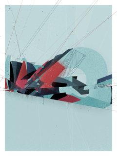
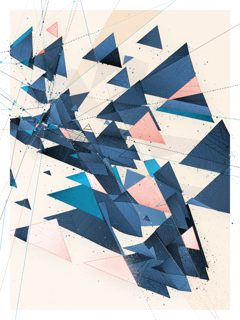

Art Blocks: the code and the token's seed are on-chain; the record, preview and live view come from Art Blocks' servers — these are our copies.
2 works · 6 files: for each work our copies of its record, its image (the preview) and its live view (the page that draws the art in a browser), each pinned at Pinata and Filebase and archived in S3. The code libraries the live views load are kept the same way. A marketplace reading the token's address goes to Art Blocks' servers, not to these copies; the copies keep the record, preview and live view if those servers stop, and their fingerprints are in the public list (see how these works are kept and proven). Artists are credited as the works' own records name them.

0x99a9b7c1116f9ceeb1652de04d5969cce509b069bafkreic7yva2r65h4qnzedvrcrgzamk6ykgzaoyp6ek7dzdlum232mcsyq gateway.pinata.cloud · ipfs.filebase.io · c-ipfs-gw.nmkr.io — 2026-10-10 · pinned at Pinata and Filebase, archived in S35fc541a8fba7e41b920eb1144d90315ec28d903b0ff115f1e46ba335bd3052c4 · 3,543 byteshttps://api.artblocks.io/token/379000122bafybeib5i6gp2wgqzatm342a5pl4pbpq5zgycstpxon6c7xyle4gpycply gateway.pinata.cloud · ipfs.filebase.io · c-ipfs-gw.nmkr.io — 2026-10-10 · pinned at Pinata and Filebase, archived in S3575bf3f8a94417df56b3f80fabd2a0e1c234ee61f4b18e9a16c9405dbf725bb7 · 2,321,424 byteshttps://media-proxy.artblocks.io/1/0x99a9b7c1116f9ceeb1652de04d5969cce…bafkreichpufnlyfc6ackmwqdwiu35ilmrauh2u7gu3oxhngbvwgmjo7v2m gateway.pinata.cloud · ipfs.filebase.io · c-ipfs-gw.nmkr.io — 2026-10-10 · pinned at Pinata and Filebase, archived in S3477d0ad5e0a2f004a65a03b229bea16c88287d53e6a6dd73b4c1ad8cc4bbf5d3 · 58,804 byteshttps://generator.artblocks.io/1/0x99a9b7c1116f9ceeb1652de04d5969cce50…
0x99a9b7c1116f9ceeb1652de04d5969cce509b069bafkreibfqkxzl43d7rask7xhm6cl3ukyt5ezguhvootowetvb2e4jzjqhq gateway.pinata.cloud · ipfs.filebase.io · c-ipfs-gw.nmkr.io — 2026-10-10 · pinned at Pinata and Filebase, archived in S32582af95f363fc41257ee76784bdd1589f499350f573a6eb12750e89c4e5303c · 3,543 byteshttps://api.artblocks.io/token/379000194bafybeiajruxuy3pzrstvoacjsviq77fd4orvt5nfmpufbp3owbkwmgjhs4 gateway.pinata.cloud · ipfs.filebase.io · c-ipfs-gw.nmkr.io — 2026-10-10 · pinned at Pinata and Filebase, archived in S3c4b3f7da4e545a09953fbc33e925e3ff2d7ce9cd04db53480fea37f989ac4785 · 3,350,904 byteshttps://media-proxy.artblocks.io/1/0x99a9b7c1116f9ceeb1652de04d5969cce…bafkreicqktq5rnbgahtkvue6dvwwbgjpu26mjfnlozy4t23znye3scksyu gateway.pinata.cloud · ipfs.filebase.io · c-ipfs-gw.nmkr.io — 2026-10-10 · pinned at Pinata and Filebase, archived in S35054e1d8b42601e6aad09e1d6d60992fa6bcc495ab7671c9eb796e09b90952c5 · 58,804 byteshttps://generator.artblocks.io/1/0x99a9b7c1116f9ceeb1652de04d5969cce50…Generated archive pages. Content identifiers point to the public IPFS network.